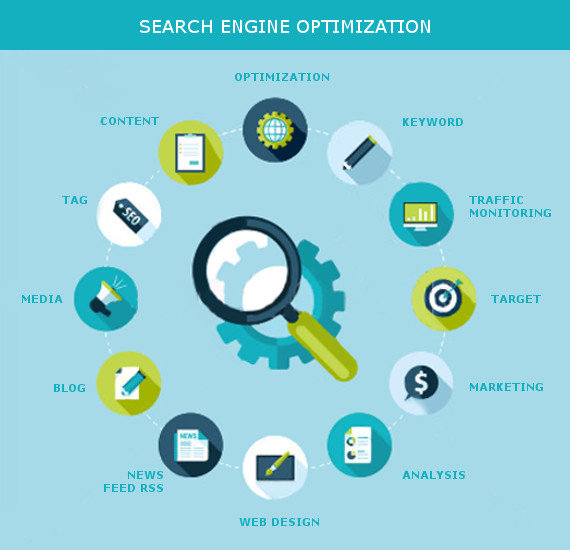

Krify - Services
Passionate to create value
MOBILE APPS DEVELOPMENT

Our core competence is mobility applications and mobile app. Welcome to Krify, the renowned mobile app studio with all in one services at one place. We are a top class mobile app ideators, designers, developers, testers and marketers. Out of all the supply chain of this industry, we are servicing at every layer. We strongly believe in the fact that mobility is the future and we have expertise in mobile application development – most specifically. Mobile app development can be looked in three ways.
WEB SERVICES WE PROVIDE
We understand the process of building websites and mobile applications through our expertise and produce award winning solutions that become popular and make our clients achieve their goals and values.
Quality Testing

Any product or app built must undergo and pass the testing process to ensure that the quality standards are complied with and are on par with the Client’s needs and International Quality Standards. This quality testing is carried out to keep the patrons informed about the quality of the product being created. In the process of doing so, multiple testing techniques are adopted to evaluate the status and identify possible risks during the implementation stage of software. The testing team works closely with Software development team and informs them if any bugs are identified, and the development works on fixing the same.
UX & UI Designs

UX Design refers to the term User Experience Design, while UI Design stands for User Interface Design. Both elements are vital to a product and work closely together. But despite their professional relationship, the roles themselves are completely different, referring to very various elements of the process and the design development. Where UX Design is a more analytical and technical field which we also called Mock ups, UI Design is closer to what we refer to as graphic design, though the responsibilities are somewhat more difficult.
Digital Marketing
For the past few years, Krify has been extending multiple levels of support to its clients based on their needs and requests. To be precise, Krify handles projects like creating apps, software products, content development, Search Engine Optimisation, Promotion of products and many more. In the event of handling the promotional activities, Krify forayed into Digital Marketing, Social Media Marketing and SEO, to give its best services to its trusted clients.